Culture générale
3090 fiches en français sur le thème « Culture générale », prêtes à imprimer et avec corrigé.
3.090 ressources
Niveau

Recyclage – Fiche : texte à trous, compréhension orale et mots mêlés

Programmation informatique – Fiche : texte à trous, compréhension orale et mots mêlés

Pékin – Fiche : texte à trous, compréhension orale et mots mêlés
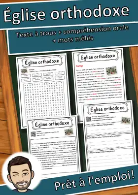
Église orthodoxe – Fiche : texte à trous, compréhension orale et mots mêlés
Oggy et les Cafards – Fiche : texte à trous, compréhension orale et mots mêlés
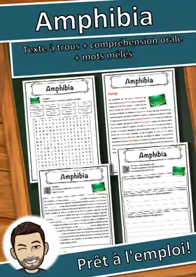
Amphibia – Fiche : texte à trous, compréhension orale et mots mêlés
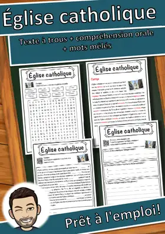
Église catholique – Fiche : texte à trous, compréhension orale et mots mêlés
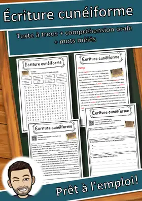
Écriture cunéiforme – Fiche : texte à trous, compréhension orale et mots mêlés
Service de renseignement – Fiche : texte à trous, compréhension orale et mots mêlés
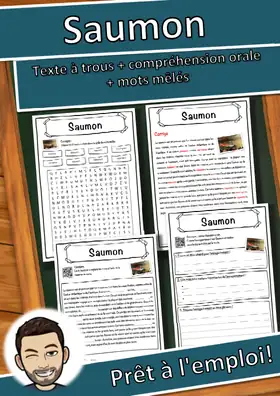
Saumon – Fiche : texte à trous, compréhension orale et mots mêlés
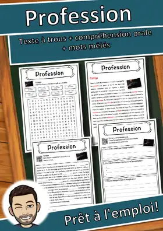
Profession – Fiche : texte à trous, compréhension orale et mots mêlés
Orville et Wilbur Wright – Fiche : texte à trous, compréhension orale et mots mêlés
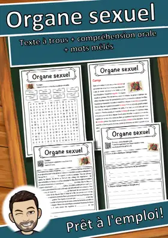
Organe sexuel – Fiche : texte à trous, compréhension orale et mots mêlés
Hippopotamidae – Fiche : texte à trous, compréhension orale et mots mêlés
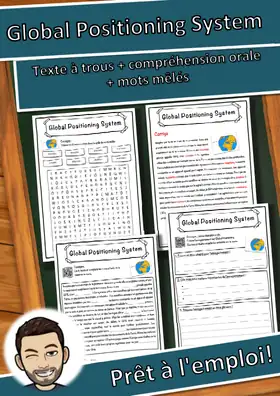
Global Positioning System – Fiche : texte à trous, compréhension orale et mots mêlés
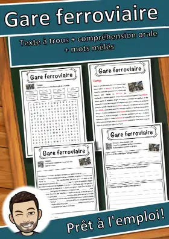
Gare ferroviaire – Fiche : texte à trous, compréhension orale et mots mêlés
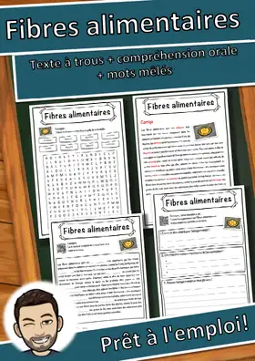
Fibres alimentaires – Fiche : texte à trous, compréhension orale et mots mêlés
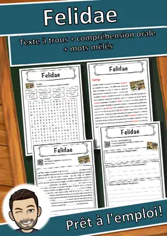
Felidae – Fiche : texte à trous, compréhension orale et mots mêlés
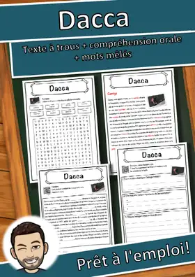
Dacca – Fiche : texte à trous, compréhension orale et mots mêlés
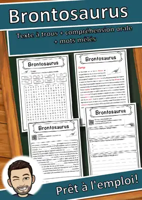
Brontosaurus – Fiche : texte à trous, compréhension orale et mots mêlés
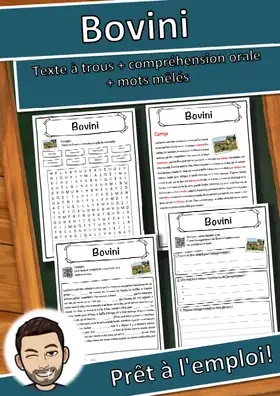
Bovini – Fiche : texte à trous, compréhension orale et mots mêlés
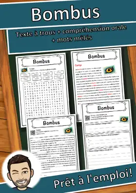
Bombus – Fiche : texte à trous, compréhension orale et mots mêlés
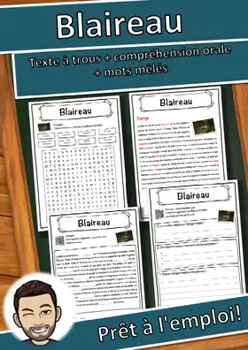
Blaireau – Fiche : texte à trous, compréhension orale et mots mêlés
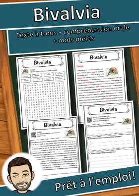
Bivalvia – Fiche : texte à trous, compréhension orale et mots mêlés
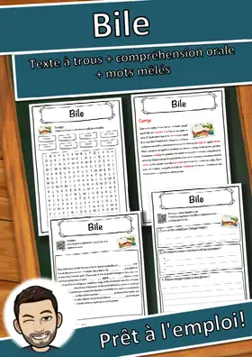
Bile – Fiche : texte à trous, compréhension orale et mots mêlés
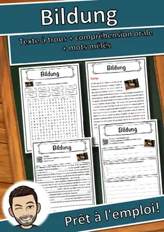
Bildung – Fiche : texte à trous, compréhension orale et mots mêlés
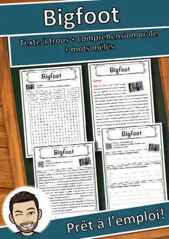
Bigfoot – Fiche : texte à trous, compréhension orale et mots mêlés
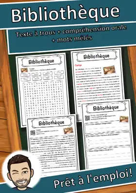
Bibliothèque – Fiche : texte à trous, compréhension orale et mots mêlés
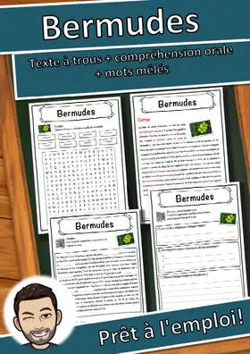
Bermudes – Fiche : texte à trous, compréhension orale et mots mêlés
Bataille navale – Fiche : texte à trous, compréhension orale et mots mêlés
Bataille de Normandie – Fiche : texte à trous, compréhension orale et mots mêlés
Basse-Autriche – Fiche : texte à trous, compréhension orale et mots mêlés
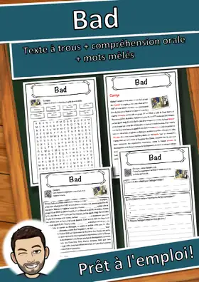
Bad – Fiche : texte à trous, compréhension orale et mots mêlés
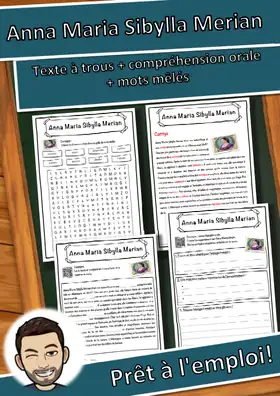
Anna Maria Sibylla Merian – Fiche : texte à trous, compréhension orale et mots mêlés

Ader – Fiche : texte à trous, compréhension orale et mots mêlés

Chocolat – Fiche : texte à trous, compréhension orale et mots mêlés
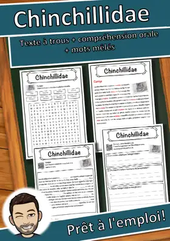
Chinchillidae – Fiche : texte à trous, compréhension orale et mots mêlés
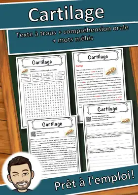
Cartilage – Fiche : texte à trous, compréhension orale et mots mêlés
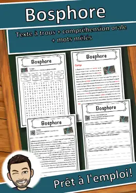
Bosphore – Fiche : texte à trous, compréhension orale et mots mêlés
Antoine de Saint-Exupéry – Fiche : texte à trous, compréhension orale et mots mêlés
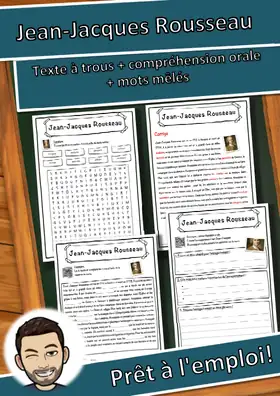
Jean-Jacques Rousseau – Fiche : texte à trous, compréhension orale et mots mêlés
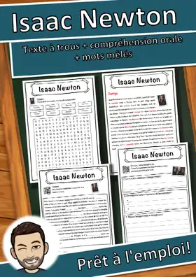
Isaac Newton – Fiche : texte à trous, compréhension orale et mots mêlés
Konrad Adenauer – Fiche : texte à trous, compréhension orale et mots mêlés
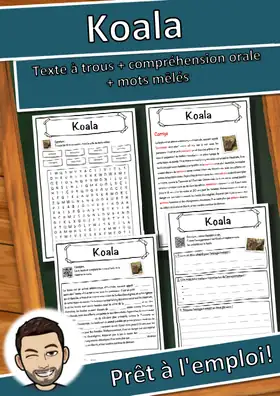
Koala – Fiche : texte à trous, compréhension orale et mots mêlés
Kinshasa – Fiche : texte à trous, compréhension orale et mots mêlés
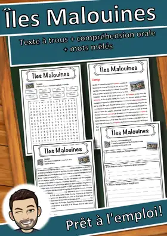
Îles Malouines – Fiche : texte à trous, compréhension orale et mots mêlés
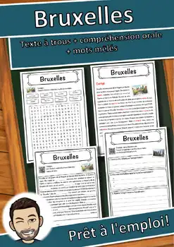
Bruxelles – Compréhension de lecture : texte à trous, écoute et mots mêlés
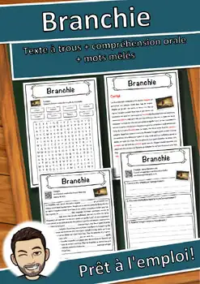
Branchie – Compréhension de lecture : texte à trous, écoute et mots mêlés
Aucune ressource trouvée – essaie un autre mot ou un autre filtre.